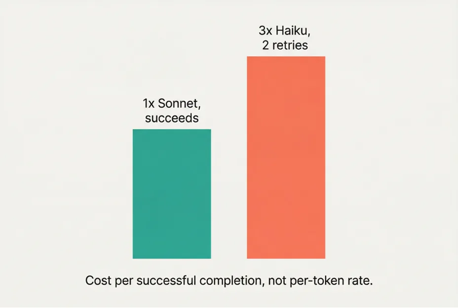
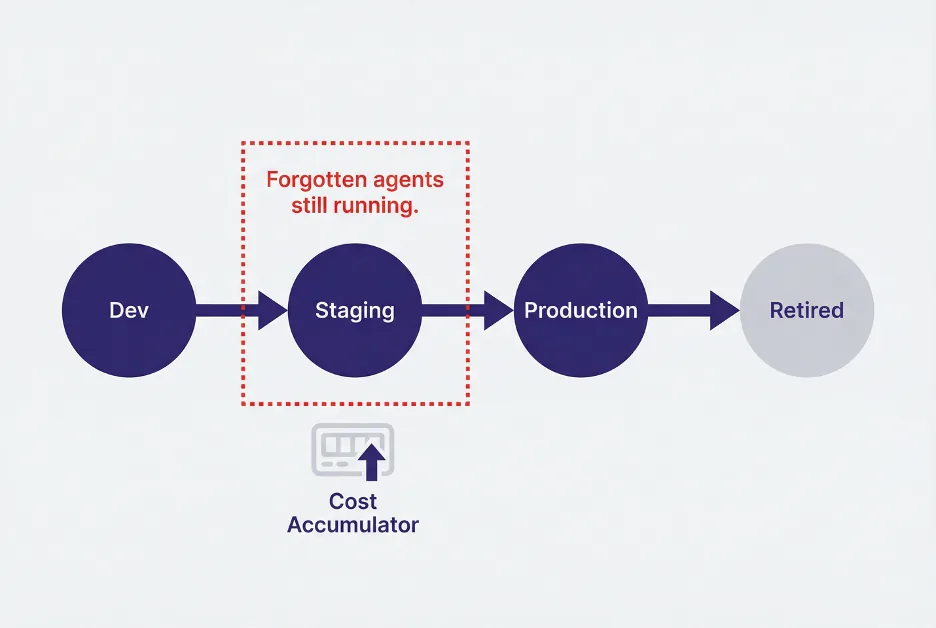
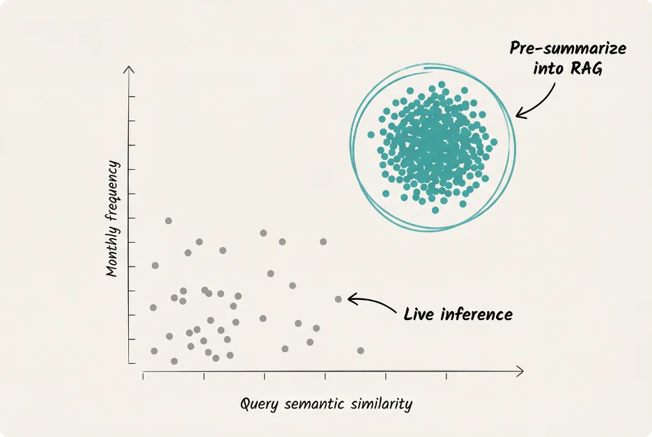

Agentic AI is being deployed across the enterprise faster than the instrumentation to manage it is being built.
The foundational observability layer is taking shape. Trace-level telemetry, span-based cost attribution, evaluation frameworks, and compliance tooling oriented around emerging standards are becoming available. For teams that need to demonstrate that a model behaved within defined parameters, or that a retrieval step occurred as expected, the primitives are increasingly there.
What is not there yet is the management layer above that foundation. The capabilities required to control costs at the agent level, maintain behavioral reliability under production conditions, govern agent lifecycles, and manage data dependencies at scale are either absent or exist only as disconnected instrumentation that has to be assembled by hand. The following is what I would want to see built.
Agentic FinOps
Traditional FinOps was designed around predictable workloads: estimate utilization, select an instance tier, reserve capacity. That model does not generalize to agents.
Cost per token is the wrong optimization unit. A smaller model may carry a lower per-token rate and still be more expensive in practice if its failure rate on complex tool-use patterns drives enough retries to exceed what a more capable model would have spent on a single pass. The correct measure is cost per successful completion. Current observability platforms do not compute it.
Prompt caching introduces a second layer of complexity. Several providers offer caching with reported savings of up to 80% on cached tokens, contingent on workloads sharing a stable common prefix of sufficient length. Cache hit rate is not a metric most observability platforms surface, and there is no tooling today to model whether prompt restructuring or a scheduled refresh would materially change the cost profile.
Agentic workloads also exhibit demand patterns that track human organizational behavior: fiscal quarter boundaries, regulatory filing cycles, geographic workforce distribution across timezones. Static capacity reservations are poorly matched to this structure. Accurate cost modeling requires request-level telemetry, not aggregate monthly spend.

Agentic reliability
Uptime is a necessary but insufficient reliability criterion for agents. Behavioral consistency under varied load and task complexity is the harder and more consequential property to measure.
Relevant signals include p95 latency disaggregated by model and agent, retry rates stratified by task complexity, and unexpected swarm expansion. A request scoped to a single agent that fans out to a dozen indicates a failure in routing logic or prompt specification, not a capacity problem.
Quality degradation is also difficult to detect through infrastructure monitoring alone. A provider model update may introduce subtle behavioral drift with no corresponding change in latency or error rate. Without continuous evaluation running against production traffic, such regressions remain undetected until a downstream stakeholder identifies them through output review.
Agent lifecycle management
Agents are developed, promoted to production, and in many cases never formally retired. The pattern is structurally similar to what accumulated in enterprise data warehouses over time: scheduled jobs continuing to execute long after the reports or processes they supported had been superseded, because no registry existed to map dependencies and no deprecation process was enforced.
For agents, the cost of an unmanaged zombie is higher and the detection path is less obvious.
A sound lifecycle model requires three components: a governed promotion path from development through staging into production, a registry that captures each agents function and its upstream and downstream dependencies, and a deprecation workflow with clear retirement criteria.

Data and RAG governance
Most production agents are backed by retrieval-augmented generation pipelines. The vector stores underlying those pipelines carry non-trivial migration costs. Few organizations maintain a traceability layer connecting agents to their source data dependencies or attributing specific retrieved documents to specific outputs. Infrastructure changes to a vector store or upstream data source therefore carry invisible blast radii until an incident surfaces them.
There is a related and largely unmeasured cost pattern. Where a significant share of users submit semantically similar queries, and each query is resolved through live inference, the system repeatedly pays to generate functionally identical answers. Clustering high-frequency similar queries, pre-summarizing their canonical responses, and serving those through retrieval rather than live generation is the direct analog of materialized views in a data warehouse. The tooling to do this at the agent layer does not yet exist as a managed capability.

The management layer
The Enterprise Data Warehouse and Data Lakehouses emerged not primarily as a scaling solution but as a governance architecture: a standardized, managed layer in which data could be cleaned, lineage could be established, and compute costs could be attributed and controlled. Without it, independent teams maintained divergent copies of institutional data, and expenditure was difficult to predict or audit. The subsequent migration to data lakes addressed scale, but organizations that moved to lakes before establishing governance discipline found the model unmanageable. Governance had to precede scale.
Agentic AI is at an equivalent inflection point. The instrumentation required includes retry-adjusted cost modeling, continuous production evaluation, formal agent lifecycle management, and a dependency graph covering RAG data sources. None of these exist today as integrated, production-ready capabilities.